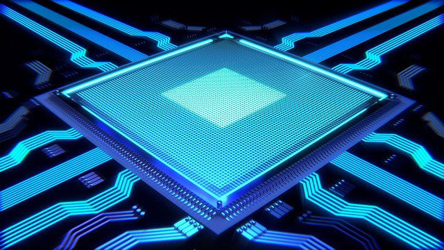

As we all know, the CPU is responsible for all the major tasks like processing data and instructions inside the computer system. But, all this is possible only because of the components present inside the CPU which divide the work among themselves and process it at a fast pace to produce the desired result. We will study each of these components in the subsequent parts.
The central processing unit (CPU) consists of six main components:
(All components work together to allow processing and system control.)